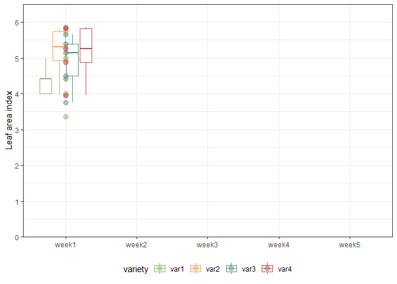
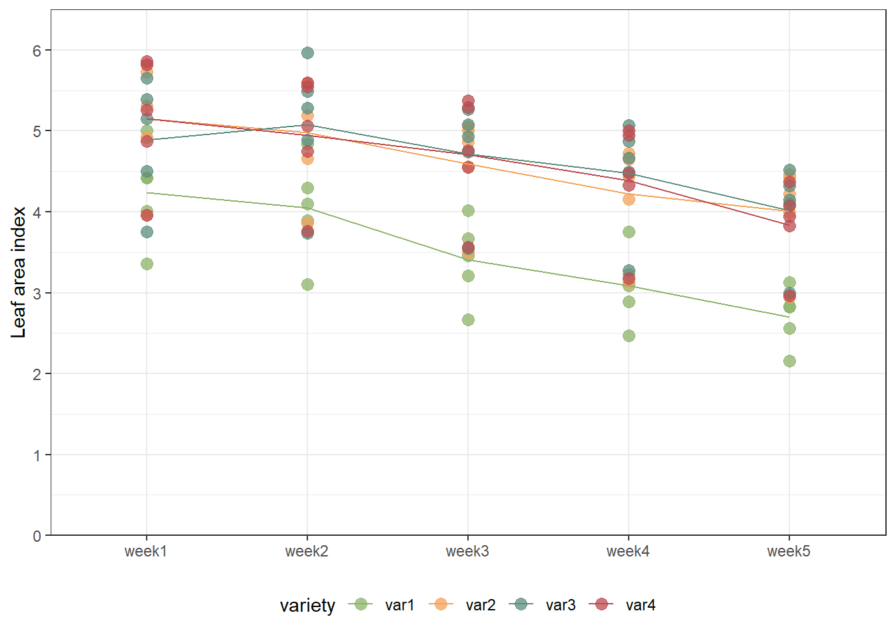

Repeated Measures RCBD
# packages
pacman::p_load(conflicted, # handle conflicting functions
agriTutorial, tidyverse, # data import and handling
nlme, glmmTMB, # linear mixed modelling
mixedup, AICcmodavg, car, # linear mixed model processing
emmeans, multcomp, # mean comparisons
ggplot2, gganimate, gifski) # (animated) plots
conflict_prefer("select", "dplyr") # set select() from dplyr as default
conflict_prefer("filter", "dplyr") # set filter() from dplyr as defaultData
The example in this chapter is taken from Example 4 in Piepho & Edmondson (2018) (see also the Agritutorial vigniette). It considers data from a sorghum trial laid out as a randomized complete block design (5 blocks) with variety (4 sorghum varities) being the only treatment factor. Thus, we have a total of 20 plots. It is important to note that our response variable (y), the leaf area index, was assessed in five consecutive weeks on each plot starting 2 weeks after emergence. Therefore, the dataset contains a total of 100 values and what we have here is longitudinal data, a.k.a. repeated measurements over time, a.k.a. a time series analysis.
As Piepho & Edmondson (2018) put it: “the week factor is not a treatment factor that can be randomized. Instead, repeated measurements are taken on each plot on five consecutive occasions. Successive measurements on the same plot are likely to be serially correlated, and this means that for a reliable and efficient analysis of repeated-measures data we need to take proper account of the serial correlations between the repeated measures (Piepho, Büchse & Richter, 2004; Pinheiro & Bates, 2000).”
Please note that this example is also considered on the MMFAIR website but with more focus on how to use the different mixed model packages to fit the models.
Import & Formatting
Note that I here decided to give more intuitive names and labels, but this is optional. We also create a column unit with one factor level per observation, which will be needed later when using glmmTMB().
# data (import via URL)
dat <- agriTutorial::sorghum %>% # data from agriTutorial package
rename(block = Replicate,
weekF = factweek, # week as factor
weekN = varweek, # week as numeric/integer
plot = factplot) %>%
mutate(variety = paste0("var", variety), # variety id
block = paste0("block", block), # block id
weekF = paste0("week", weekF), # week id
plot = paste0("plot", plot), # plot id
unit = paste0("obs", 1:n() )) %>% # obsevation id
mutate_at(vars(variety:plot, unit), as.factor) %>%
as_tibble()
dat## # A tibble: 100 x 8
## y variety block weekF plot weekN varblock unit
## <dbl> <fct> <fct> <fct> <fct> <int> <int> <fct>
## 1 5 var1 block1 week1 plot1 1 1 obs1
## 2 4.84 var1 block1 week2 plot1 2 1 obs2
## 3 4.02 var1 block1 week3 plot1 3 1 obs3
## 4 3.75 var1 block1 week4 plot1 4 1 obs4
## 5 3.13 var1 block1 week5 plot1 5 1 obs5
## 6 4.42 var1 block2 week1 plot2 1 2 obs6
## 7 4.3 var1 block2 week2 plot2 2 2 obs7
## 8 3.67 var1 block2 week3 plot2 3 2 obs8
## 9 3.23 var1 block2 week4 plot2 4 2 obs9
## 10 2.83 var1 block2 week5 plot2 5 2 obs10
## # ... with 90 more rowsExploring
In order to obtain a field layout of the trial, we would like use the desplot() function. Notice that for this we need two data columns that identify the row and col of each plot in the trial. These are unfortunately not given here, so that we cannot create the actual field layout plot.
descriptive tables
We could also have a look at the arithmetic means and standard deviations for yield per variety.
dat %>%
group_by(variety) %>%
summarize(mean = mean(y, na.rm=TRUE),
std.dev = sd(y, na.rm=TRUE)) %>%
arrange(desc(mean)) %>% # sort
print(n=Inf) # print full table## # A tibble: 4 x 3
## variety mean std.dev
## <fct> <dbl> <dbl>
## 1 var3 4.63 0.757
## 2 var4 4.61 0.802
## 3 var2 4.59 0.763
## 4 var1 3.50 0.760Furthermore, we could look at the arithmetic means for each week as follows:
dat %>%
group_by(weekF, variety) %>%
summarize(mean = mean(y, na.rm=TRUE)) %>%
pivot_wider(names_from = weekF, values_from = mean) ## # A tibble: 4 x 6
## variety week1 week2 week3 week4 week5
## <fct> <dbl> <dbl> <dbl> <dbl> <dbl>
## 1 var1 4.24 4.05 3.41 3.09 2.7
## 2 var2 5.15 4.98 4.59 4.22 4.01
## 3 var3 4.89 5.07 4.71 4.48 4.02
## 4 var4 5.15 4.94 4.71 4.39 3.83descriptive plot
We can also create a plot to get a better feeling for the data. Note that here we could even decide to extend the ggplot to become an animated gif as follows:

Model building
Our goal is therefore to build a suitable model taking serial correlation into account. In order to do this, we will initially consider the model for a single time point. Then, we extend this model to account for multiple weeks by allowing for week-speficic effects. Finally, we further allow for serially correlated error terms.
Sinlge week
When looking at data from a single time point (e.g. the first week), we merely have 20 observations from a randomized complete block design with a single treatment factor. It can therefore be analyzed with a simple one-way ANOVA (fixed variety effect) for randomized complete block designs (fixed block effect):
dat.wk1 <- dat %>% filter(weekF == "week1") # subset data from first week only
mod.wk1 <- lm(formula = y ~ variety + block,
data = dat.wk1)We could now go on and look at the ANOVA via anova(mod.wk1) and it would indeed not be wrong to simply repeat this for each week. Yet, one may not be satisfied with obtaining multiple ANOVA results - namely one per week. This is especially likeliy in case the results contradict each other, because e.g. the variety effects are found to be significant in only two out of five weeks. Therefore, one may want to analyze the entire dataset i.e. the multiple weeks jointly.
Multiple weeks (MW)
Going from the single-week-analysis to jointly analyzing the entire dataset is more than just changing the data = statement in the model. This is because “it is realistic to assume that the treatment effects evolve over time and thus are week-specific. Importantly, we must also allow for the block effects to change over time in an individual manner. For example, there could be fertility or soil type differences between blocks and these could have a smooth progressive or cumulative time-based effect on differences between the blocks dependent on factors such as temperature or rainfall” (Piepho & Edmondson, 2018). We implement this by taking the model in mod.wk1 and multipyling each effect with week. Note that this is also true for the general interecept (µ) in mod.wk1, meaning that we would like to include one intercept per week, which can be achieved by simply adding week as a main effect as well. This leaves us with fixed main effects for week, variety, and block, as well as the week-specific effects of the latter two week:variety and week:block.
Finally, note that we are not doing anything about the model’s error term at this point. More specifically this means that its variance structure is still the default iid (independent and identically distributed) - see the summary on correlation/variance strucutres at the MMFAIR website.
I decide to use the
glmmTMBpackage to fit the linear models here, because I feel that their syntax is more intuitive. Note that one may also use thenlmepackage to do this, just as (Piepho & Edmondson, 2018) did and you can find a direct comparison of the R syntax with additional information in the MMFAIR chapter.
MW - indepentent errors
glmmTMB
With the glmmTMB() function, it is possible to
- fix the error variance to 0 via adding the
dispformula = ~ 0argument and then - mimic the error (variance) as a random effect (variance) via the
unitcolumn with different entries for each data point.
While this may not be necessary for this model with the default homoscedastic, independent error variance structure, using it here will allow for an intuitve comparison to the following model with more sophisticated variance structures.
mod.iid <- glmmTMB(formula = y ~ weekF * (variety + block)
+ (1 | unit), # add random unit term to mimic error variance
dispformula = ~ 0, # fix original error variance to 0
REML = TRUE, # needs to be stated since default = ML
data = dat)
# Extract variance component estimates
# alternative: mod.iid %>% broom.mixed::tidy(effects = "ran_pars", scales = "vcov")
mod.iid %>% mixedup::extract_vc(ci_scale = "var") ## group effect variance sd var_2.5 var_97.5 var_prop
## 1 unit Intercept 0.023 0.152 0.016 0.033 1
## 2 Residual 0.000 0.000 NA NA 0As expected, we find the residual variance to be 0 and instead we have the mimiced homoscedastic, independent error variance for the random (1 | unit) effect estimated as 0.023.
nlme
Since the models in this chapter do not contain any random effects, we make use of gls() instead of lme(). Furthermore, we specifically write out the correlation = NULL argument to get a homoscedastic, independent error variance structure. While this may not be necessary because it is the default, using it here will allow for an intuitve comparison to the following models with more sophisticated variance structures.
mod.iid.nlme <- gls(model = y ~ weekF * (block + variety),
correlation = NULL, # default, i.e. homoscedastic, independent errors
data = dat)
# Extract variance component estimates
tibble(varstruct = "iid") %>%
mutate(sigma = mod.iid.nlme$sigma) %>%
mutate(Variance = sigma^2)## # A tibble: 1 x 3
## varstruct sigma Variance
## <chr> <dbl> <dbl>
## 1 iid 0.152 0.0232It can be seen that the residual homoscedastic, independent error variance was estimated as 0.023.
Model selection
variance structure
glmmTMB
In order to select the best model here, we can simply compare their AIC values, since all models are identical regarding their fixed effects part. The smaller the value of AIC, the better is the fit:
AICcmodavg::aictab(
cand.set = list(mod.iid, mod.hCS, mod.AR1, mod.Toep, mod.UN),
modnames = c("iid", "hCS", "AR1", "Toeplitz", "UN"),
second.ord = FALSE) # get AIC instead of AICc##
## Model selection based on AIC:
##
## K AIC Delta_AIC AICWt Cum.Wt LL
## AR1 42 38.04 0.00 0.96 0.96 22.98
## hCS 46 45.25 7.20 0.03 0.98 23.38
## UN 55 47.10 9.05 0.01 0.99 31.45
## Toeplitz 49 47.88 9.84 0.01 1.00 25.06
## iid 41 78.26 40.22 0.00 1.00 1.87According to the AIC value, the mod.AR1 model is the best, suggesting that the plot values across weeks are indeed autocorrelated (as opposed to the mod.iid model) and that from all the potential variance structures, the first order autoregressive structure was best able to capture this autocorrelation.
nlme
In order to select the best model here, we can simply compare their AIC values, since all models are identical regarding their fixed effects part. The smaller the value of AIC, the better is the fit:
AICcmodavg::aictab(
cand.set = list(mod.iid.nlme, mod.CS.nlme, mod.AR1.nlme, mod.AR1nugget.nlme, mod.UN.nlme),
modnames = c("iid", "CS", "AR1", "AR1 + nugget", "UN"),
second.ord = FALSE) # get AIC instead of AICc##
## Model selection based on AIC:
##
## K AIC Delta_AIC AICWt Cum.Wt Res.LL
## AR1 + nugget 43 37.48 0.00 0.42 0.42 24.26
## AR1 42 38.04 0.57 0.31 0.73 22.98
## CS 42 38.38 0.90 0.27 1.00 22.81
## UN 55 47.10 9.62 0.00 1.00 31.45
## iid 41 78.26 40.78 0.00 1.00 1.87According to the AIC value, the mod.AR1 model is the best, suggesting that the plot values across weeks are indeed autocorrelated (as opposed to the mod.iid model) and that from all the potential variance structures, the first order autoregressive structure was best able to capture this autocorrelation.
time trend as (polynomial) regression model
So far, we have focussed on dealing with potentially correlated error terms for our repeated measures data. Now that we dealt with this and found an optimal solution, we are now ready to select a regression model for time trend. As a reminder, this is the data we are dealing with (this time not animated):
ggplot(data = dat,
aes(y = y, x = weekF,
group = variety,
color = variety)) +
geom_point(alpha = 0.75, size = 3) +
stat_summary(fun=mean, geom="line") + # lines between means
scale_y_continuous(
name = "Leaf area index",
limits = c(0, 6.5),
expand = c(0, 0),
breaks = c(0:6)) +
scale_color_manual(values = var_colors) +
theme_bw() +
theme(legend.position = "bottom",
axis.title.x = element_blank())
It can now be asked whether the trend over time is simply linear (in the sense of y = a + bx) or can better be modelled as with a polynomial regression (i.e. y = a + bx + cx² or y = a + bx + cx² + dx³ and so on). Very roughly put, we are asking whether a straight line fits the data well enough or if we should instead use a model that results in some sort of curved line.
In order to answer this question, we use the lack-of-fit method to determine which degree of a polynomial regression we should go with. We start with the linear regression model.
work in progress
Please feel free to contact me about any of this!
schmidtpaul1989@outlook.com